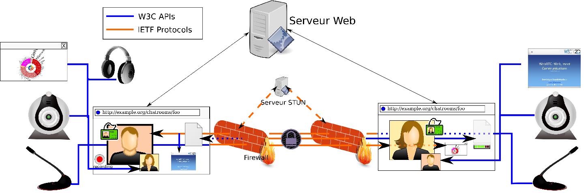
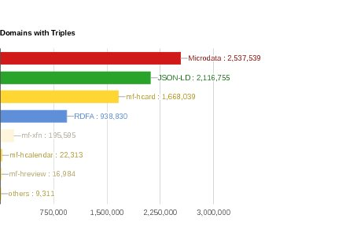

New edition as of Jan. 2018! Check the status of W3C Web technologies that increase the capabilities of Web applications in the mobile context: device adaptation, forms, data storage, graphics, media, user input, etc. https://twitter.com/w3c/status/948481414869213184
https://twitter.com/w3cdevs/status/948486902184849408The web's greatest minds explain how we can fix the [internet] #web!: http://www.wired.co.uk/article/the-webs-greatest-minds-on-how-to-fix-it @timberners_lee
https://twitter.com/w3cdevs/status/955788891868549120Congrats to @dustyweb @Tsyesika @erincandescent @rhiaro @evanpro and @SocialWebWG for the newly published @w3c #WebStandard "ActivityPub": https://www.w3.org/TR/activitypub/ #timetoadopt https://twitter.com/sandhawke/status/955803104859041792
"It's taken many years of work by [@Tsyesika ], Chris Webber and many people in the @SocialWebWG . I'm thankful to all of those who helped bring this forward. I hope this standard will help shape social applications allowing them to be more open" https://twitter.com/i/web/status/956866645036642304
https://twitter.com/w3cdevs/status/955809230027673602Congrats to @julien51
@aaronpk and @SocialWebWG for the newly published @w3c #WebStandard "WebSub": https://www.w3.org/TR/websub/ #timetoadopt https://twitter.com/sandhawke/status/955802084825337856
https://twitter.com/w3cdevs/status/955809575931908096The Generic Sensor API is a framework API to bring sensors to Web browsers https://www.w3.org/TR/generic-sensor/ - it tries to improve the disparate efforts and lessons learnt from them for previous sensors (geolocation, orientation and movement) https://twitter.com/briankardell/status/956179493143633921
The Device and Sensors Working Group is close to bringing it to Candidate Recommendation - the API is available as an origin trial in Chrome https://twitter.com/anssik/status/938519797603753985 and there is a polyfill for turning the existing into the new model APIs https://twitter.com/anssik/status/943473241607299072
https://twitter.com/w3cdevs/status/956181984681840642So, tune in to the live stream tonight 7pm EST to learn more about this work https://www.meetup.com/Pittsburgh-Code-Supply/events/246610327/
https://twitter.com/w3cdevs/status/956181992596484096The group is actively looking for feedback on this new approach, which is meant to help managing multiple sensors simulatenously, bring a stronger privacy and security story for them and enable high-performance use cases and sensor fusion
https://twitter.com/w3cdevs/status/956181990138634241Its most well-known and deployed API is the Payment Request API, which streamlines the Web checkout process: browsers take charge of collecting and managing users' payment information, bringing less typing and more consistency in that experience https://www.w3.org/TR/payment-request/
The @w3payments Working Group released yesterday its roadmap of work for 2018 https://lists.w3.org/Archives/Public/public-payments-wg/2018Jan/0030.html . This is the group developing new features to facilitate and improve payments in Web browsers.
https://twitter.com/w3cdevs/status/956510872108707840Part of the 2018 roadmap is to get further adoption from merchants as highlighted by the group's staff contact @ibjacobs https://www.w3.org/blog/wpwg/2017/12/14/merchant-adoption-the-next-goal/
https://twitter.com/w3cdevs/status/956510876575633408On the browser side, the picture is already pretty good for such a young API: it's available in @googlechrome, @MSEdgeDev , @samsunginternet , @opera and in preview in @webkit safari and @firefox
https://twitter.com/w3cdevs/status/956510874130411526Combined with the no-install / just-in-time quality of the Web, it creates brand new opportunities. You could imagine e.g. to get tourists to pay for a bus ticket by flashing a QR code. Or even better, YOU could imagine new usages 😋
https://twitter.com/w3cdevs/status/956510881151705088This API should actually expand your view of what a merchant is: because it significantly reduces friction in payment flows, it enables to ask for on-line payment in situations you would not even have considered before.
https://twitter.com/w3cdevs/status/956510879159332864Beyond this, the 2018 roadmap includes pushing further experimentation with another major work item of the group: Payment Handler https://www.w3.org/TR/payment-handler/. That API enables innovation in online payments by facilitating integration of Web sites as payment providers.
https://twitter.com/w3cdevs/status/956510884855205888If you're interested in adopting it in your projects, https://developer.mozilla.org/en-US/docs/Web/API/Payment_Request_API and https://github.com/w3c/payment-request-info/ are good starting points - and as always, your feedback on the API is most welcomed at https://github.com/w3c/payment-request/
https://twitter.com/w3cdevs/status/956510883110408192The group also wants to increase built-in security for on-line payments: once the browser manages payment data, merchants can opt not to receive sensitive data (e.g. card numbers) directly, and instead get a proof of a payment order from the user - known as tokenization.
https://twitter.com/w3cdevs/status/956510890081374209Even if you're not in the business of creating payment systems, by enabling greater competition among payment providers, it should help merchants and buyers by reducing costs and improving flows.
https://twitter.com/w3cdevs/status/956510888495865858The idea is that if you want to develop a new e.g. paypal, it will make it easier for merchants to include your service among their payment options, and make the over payment flow a lot more user-friendly.
https://twitter.com/w3cdevs/status/956510886864277505Finally, the group will be on the look for new method of payments: the current work enables credit cards, native apps and Web apps to act as payment system. A lot of innovation is happening in that sphere (cryptocurrencies, interledger) that may have specific integration needs.
https://twitter.com/w3cdevs/status/956510893600276480Likewise, this can facilitate the adoption of stronger authentication mechanisms, such as 3D secure or the 2-factor authentication mechanisms being developed by another W3C Working Group, Web Authentication https://www.w3.org/webauthn
https://twitter.com/w3cdevs/status/956510891880730625Two main components of that series enable access to mic and cameras https://www.w3.org/TR/mediacapture-streams/ and then provide the building blocks to establish a real-time connection between a browser and another peer (possibly another browser) https://www.w3.org/TR/webrtc/
Another Working Group is looking at its work plan for the upcoming year: the WebRTC Working Group. That group is responsible for a series of specification that enables p2p real-time audio/video/data exchange on the Web. https://twitter.com/w3cdevs/status/956510869567000576
https://twitter.com/w3cdevs/status/956559823293878272A lot of the group's efforts will be to push for convergence of browser implementations via increased attention to its test suite https://github.com/w3c/web-platform-tests/tree/master/webrtc
https://twitter.com/w3cdevs/status/956559829245530112These 2 APIs are already adopted across all modern browsers, although there are still quite a few incompatibilities among them. https://caniuse.com/#search=webrtc
https://twitter.com/w3cdevs/status/956559827139952640The group has also a few additional APIs to enable screen sharing, recording, quality monitoring - these too will need attention for greater adoption and interoperability. https://www.w3.org/2011/04/webrtc/
https://twitter.com/w3cdevs/status/956559833511223296Given the peer-to-peer nature of the tech, there is even a separate dedicated system to identify specific bugs when a given browser tries to connect with another specific one https://github.com/webrtc/KITE
https://twitter.com/w3cdevs/status/956559831665725440The focus of the most recent discussion though is on the evolution of the real-time connection API https://lists.w3.org/Archives/Public/public-webrtc/2018Jan/0196.html
https://twitter.com/w3cdevs/status/956559835893567490The group is looking for input from developers who are using (or have wanted to use) the #WebRTC API and have informed opinions about its potential shortcomings, and the improvements it could benefit from. So if you're a #WebRTC developer, now would be a good time to chime in!
https://twitter.com/w3cdevs/status/956559837839679493Not to be missed! @tag #meetup in London to 1) meet & greet newly elected
@lukOlejnik 2) learn what the TAG is up to and 3) give feedback about TAG's current priorities: https://ti.to/w3c-tag/meet-the-tag-london
https://twitter.com/w3cdevs/status/956845017729028096and some of the derivative APIs of generic sensors: e.g. ambient light https://github.com/w3c/ambient-light/issues?q=is%3Aissue+author%3Alknik - incorporating the results of research in particular in the field of security and privacy is critical in improving the safety of users
https://twitter.com/w3cdevs/status/956882902352003072They've been brought up for discussions to the relevant groups - e.g. for the work on Generic Sensors https://github.com/w3c/sensors/issues?utf8=%E2%9C%93&q=+is%3Aissue+author%3Alknik+
https://twitter.com/w3cdevs/status/956882900485656576JSON-LD 1.0 provides a set of conventions for describing data in JSON that makes it compatible with Linked Data, aiming at making data easily reusable across data sets - it was published as a W3C Recommendation in 2014 https://www.w3.org/TR/json-ld/ #jsonld
It is one of the format recognized to express data with @schemaorg_dev and is in wide use - in 2.1M+ distinct domains in 2016 according to http://webdatacommons.org/structureddata/#results-2016-1
https://twitter.com/w3cdevs/status/956888716076822533After 4 years, the JSON-LD community is now interested in bringing an update to the existing Recommendation, based on lessons learned and features that didn't make the first release https://json-ld.org/presentations/JSON-LD-Update-TPAC-2017/assets/player/KeynoteDHTMLPlayer.html#8
https://twitter.com/w3cdevs/status/956888720262746112To do so, W3C would need to charter a new Working Group to take up the work - that process has now started. If you're interested in the future of #JSONLD, please bring your input on the new charter https://github.com/json-ld/charter/issues http://lists.w3.org/Archives/Public/public-new-work/2018Jan/0012.html
https://twitter.com/w3cdevs/status/956888721835593729Some of our standards have enough of an active community that they maintain themselves, with a new working group created to formalize these updates.
But not all of our standards do - yet all of our standards need to be maintained as bugs emerge over time. https://twitter.com/w3cdevs/status/956888720262746112
We are now trying to improve how that maintenance happens, and facilitate the publication of correction to the standards. With many of our specs developed in @github repos, we want to use these repos to track and discuss bugs discovered after Recommendation.
https://twitter.com/w3cdevs/status/956911344057544710But with 200+ recommendations without an active Working Group, even tracking all these repos is a bit of a logistical challenge. We've recently set up an automatic periodic summary of the activity on repos of these orphan specifications https://twitter.com/plhw3org/status/956562032899260416
https://twitter.com/w3cdevs/status/956911347882774528Now the hard work of reviewing all these potential bugs and change requests is still to be done - but hey, you've got to start somewhere 😅
https://twitter.com/w3cdevs/status/956911349870813184What is the TAG? Created by @w3c in 2001, the Technical Architecture Group serves #developers interests by driving consistent Web #design principles. Learn more: https://www.w3.org/2001/tag/ @w3ctag
Fact: the @tag helps make the Web a better place for #developers by improving the consistency of Web technologies developed inside and outside W3C. Read their stories: https://www.w3.org/blog/TAG/
https://twitter.com/w3cdevs/status/957974903122219008Fact: the @tag reviews technical specifications for the Web. See what they're up to these days: https://github.com/w3ctag/design-reviews/
https://twitter.com/w3cdevs/status/957975523409453056@tag's latest focus has been on pushing consistency in #JavaScript #APIs, documenting its principles along the way https://w3ctag.github.io/design-principles/
https://twitter.com/w3cdevs/status/957975699335319552The @tag is also looking at how Web technologies fit with the principles of the #ExtensibleWebManifesto, i.e., can low level capabilities explain or provide the equivalent of high level features? https://github.com/extensibleweb/manifesto
https://twitter.com/w3cdevs/status/957976876877795328Fact: the @tag publishes findings. These are short documents that cover a specific issue in the Web architecture: https://tag.w3.org/findings/
https://twitter.com/w3cdevs/status/957977360921518080Example of a recent @tag finding: how to help users decide about the trustworthiness and provenance of #syndicatedcontent https://www.w3.org/2001/tag/doc/distributed-content/ @triblondon
https://twitter.com/w3cdevs/status/957977570716286976This finding has been quoted in the recent exploration of avoiding URL-hijacking in #AMP pages: https://amphtml.wordpress.com/2018/01/09/improving-urls-for-amp-pages/amp/ https://twitter.com/cramforce/status/950549603975233536
https://twitter.com/w3cdevs/status/957977907103584256For all these facts and stories, meet the TAG this coming Thursday in London! https://ti.to/w3c-tag/meet-the-tag-london
https://twitter.com/w3cdevs/status/957978523926482944This #W3Cworkshop comes in the context of the new European directive on privacy rights, #GDPR, and will look at how to manage #LinkedData to preserve privacy properties through their lifecycle
https://twitter.com/w3cdevs/status/958271398992072704If you want to get involved in the work around #WebXR, the relevant Github repos are at https://github.com/immersive-web , the mailing list is https://lists.w3.org/Archives/Public/public-webvr/ and they are now organizing regular teleconferences open to all the CG participants - join at https://www.w3.org/community/webvr/ https://twitter.com/w3c/status/958272598823133184
The main API , #WebXR Device API is developed at https://github.com/immersive-web/webxr/ - it enables browsers to interact with VR/AR/MR headsets and their many capabilities.
Compared to the existing WebVR 1.1 API, it provides a much smoother integration with the browser render loop.
https://twitter.com/w3cdevs/status/958276039721013248But since that API is not implemented yet, the best way to get started with VR on the Web is the existing WebVR 1.1 API https://webvr.info/
https://twitter.com/w3cdevs/status/958277403855540224To get a grasp of what the API looks like, the explainer is the best place to start https://github.com/immersive-web/webxr/blob/master/explainer.md
https://twitter.com/w3cdevs/status/958277402286854144And being based on Web technologies doesn't imply lower quality or performance - see https://twitter.com/utopiah/status/956840285719363585
https://twitter.com/w3cdevs/status/958277406120439809IndexedDB 2 provides an upgrade to everyone's favorite client-side database #IndexedDB https://www.w3.org/TR/2018/REC-IndexedDB-2-20180130/#revision-history
@bevistseng provided a very nice overview of the new features in a @mozhacks article some months ago https://hacks.mozilla.org/2016/10/whats-new-in-indexeddb-2-0/ https://twitter.com/w3c/status/958322683128709121
Browser support is already quite good https://caniuse.com/#feat=indexeddb2 - main exception is @MicrosoftEdge https://wpdev.uservoice.com/forums/257854-microsoft-edge-developer/suggestions/31149550-indexeddb-2-0
https://twitter.com/w3cdevs/status/958331196697661441There are already a number of new features that have been requested for that API https://github.com/w3c/IndexedDB/issues?q=is%3Aissue+is%3Aopen+label%3A%22feature+request%22 - is yours already there?
https://twitter.com/w3cdevs/status/958331200615124993WCAG 2.1 primary focus is #accessibility requirements for people with low vision and cognitive and learning disabilities, and #mobile accessibility https://www.w3.org/WAI/WCAG20/wcag2faq#v21
#WCAG 2.1 proposes an update to the Web Content Accessibility Guidelines https://www.w3.org/TR/WCAG21/ - having reached Candidate Recommendation status, the Accessibility Guidelines Working Group is seeking implementation feedback from #webdeveloper #timetoimplement @wai https://twitter.com/w3c/status/958322681597841409
https://twitter.com/w3cdevs/status/958344948411191296If you have feedback, find bugs or issues with the current document, please file them at https://github.com/w3c/wcag21/issues
https://twitter.com/w3cdevs/status/958344954094505984And the details about the expectations around implementation feedback and schedule are given by @awkawk in his blog post published today https://www.w3.org/blog/2018/01/wcag21-cr/
https://twitter.com/w3cdevs/status/958344952295108608There is more background and context on this document in @joshueoconnor blog post from a year ago https://www.w3.org/blog/2017/02/wcag21-fpwd/
https://twitter.com/w3cdevs/status/958344950596415488To learn the basics about why #accessibility matters and how #WebStandard can help, see the video released last month featuring our very own @sabouzah https://twitter.com/w3c/status/937678607245299712
https://twitter.com/w3cdevs/status/958345656124321792“But Selectors Level 3 was published as a Recommendation a bazillion years ago? 😲†I hear you ask https://www.w3.org/TR/2011/REC-css3-selectors-20110929/ https://twitter.com/w3c/status/958322679790129152
“What's happening? Is all my extended knowledge about #CSS selectors good for the bin? How will I chit-chat at my next meetup? 😱" I hear you worry
https://twitter.com/w3cdevs/status/958358446298066944Fear not - this is a minor update to the existing Recommendation:
“Allow the Structural pseudo-classes to match the root element ”
https://www.w3.org/TR/2018/CR-selectors-3-20180130/#changes - look, you've just gained a new topic of conversation for your next meetup!
https://twitter.com/w3cdevs/status/958358449678667777It all started from @larsenwork 's article a few months ago, and graduated to be on the @CSSWG agenda thanks to @meyerweb. This is how YOU too can help build the Web forward
The @CSSWG proposal in on github at https://github.com/w3c/csswg-drafts/issues/1332 - The CSS Timing spec is to be renamed into CSS Easing https://github.com/w3c/csswg-drafts/issues/1577#issuecomment-319592447 https://drafts.csswg.org/css-timing/ so that its easing functions can be used e.g. for gradients too https://twitter.com/Lady_Ada_King/status/958363148662263808
https://twitter.com/w3cdevs/status/958366231534415872Speech Synthesis is pretty widely supported in current browsers: https://caniuse.com/#feat=speech-synthesis
Web Speech is a #JavaScript API that brings two main capabilities to Web browsers: speech synthesis and speech recognition.
It was developed by the Web Speech #CommunityGroup (i.e. not a formal standard at this point) https://w3c.github.io/speech-api/webspeechapi.html https://github.com/w3c/speech-api/ https://twitter.com/hadleybeeman/status/958647360824987648
https://twitter.com/w3cdevs/status/958684445514465280.@briankardell ran a dedicated (and recorded) deep-dive on the API and its limitations during a http://chapters.io meetup https://www.youtube.com/watch?v=gJ0gYki6F9k
https://twitter.com/w3cdevs/status/958684449243389952Speech Recognition on the other hand has currently a pretty limited level of cross-browser support https://caniuse.com/#feat=speech-recognition
https://twitter.com/w3cdevs/status/958684447469162497With the rise of voice-based assistants, and with new fields of application of Web technologies (VR headsets, IOT) where hand-based text input isn't ideal, there has been a simmering interest to bring this to the formal standardization track https://github.com/w3c/strategy/issues/71
https://twitter.com/w3cdevs/status/958684451331911680Live from the @tag face-to-face meeting! https://twitter.com/hadleybeeman/status/958722356943507457
https://twitter.com/w3cdevs/status/958727121144287232A lot of variation among what each #browser offers in #privacymode - is it a bug or a feature? where would more interoperability help? where do we need to leave room for differentiation? @tag is investigating the question https://github.com/w3ctag/design-reviews/issues/101 https://twitter.com/hadleybeeman/status/958736664242933760
https://twitter.com/w3cdevs/status/958739466931359745